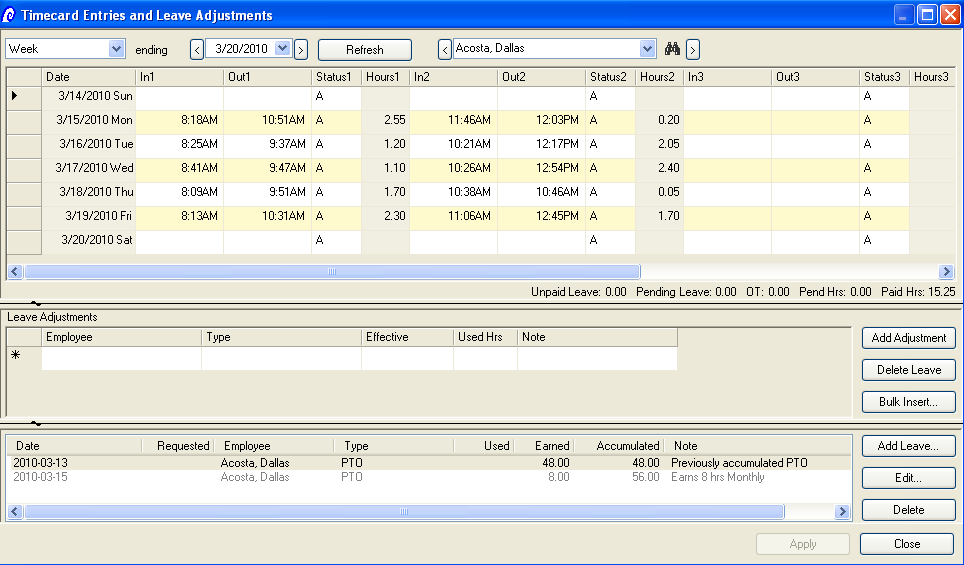
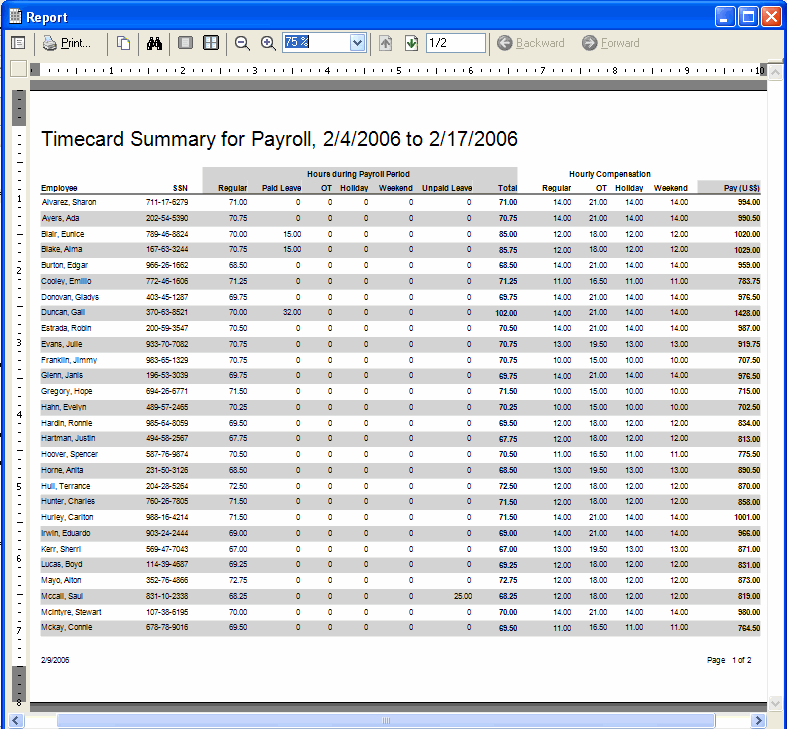

|
||||||||||||||||||

|
||||||||||||||||||
The Leave Matrix allows you to use one window to easily look up and schedule leave for all employees. Employees are listed in the TreeView (left) by department, manager, location, etc. View the Leave Matrix to summarize used leave over any period. Open individual employees quickly to enter leave requests or update time off.  Price
iLeave | Download free trial | Learn about Web Self Serve Add-on Price
iLeave | Download free trial | Learn about Web Self Serve Add-on
Use the Leave tab on an employee's window to enter anything and everything about individual leave. Schedule, accrue, and credit. Quickly check for an employee's unused leave. Make manual adjustments and schedule tasks regarding a specific employee.  Price
iLeave | Download free trial | Learn about Web Self Serve Add-on Price
iLeave | Download free trial | Learn about Web Self Serve Add-on
Many companies use different accrual plans for different employees. Leave accrual plans allow executives to earn more vacation, etc. than managers. Likewise, managers may earn more leave than employees. Simply set up a leave accrual plan to match the way your employees accumulate leave. Then assign each employee to a plan. Based on the plan, employees will accrue leave automatically. Employees can be automatically bumped up to a different accrual rate based on seniority. You can also set limits on accumulated leave.  Price iLeave | Download free trial | Learn about Web Self Serve Add-on iLeave offers dozens of reports that focus on leave. List employees by month and date or print out monthly calendars. List covering employees on calendars as well. Run reports on denied or pending leave requests. Analyze lost time by employee, manager, or department. Summarize paid and unpaid leave for all employees or report on the most absent employee.  Price iLeave | Download free trial | Learn about Web Self Serve Add-on iLeave offers dozens of reports that focus on leave. List employees by month and date or print out monthly calendars. List covering employees on calendars as well. Run reports on denied or pending leave requests. Analyze lost time by employee, manager, or department. Summarize paid and unpaid leave for all employees or report on the most absent employee.  Price iLeave | Download free trial | Learn about Web Self Serve Add-on Run a report for pending leave requests to help stay organized. Easily record leave requests and track whether they are approved, denied, or pending. Track the period of absence, type, and number of hours used.  Price iLeave | Download free trial | Learn about Web Self Serve Add-on Enter time sheet entries for one employee or many employees. Select from different schemas to support hourly employees, salaried time logged against projects/jobs, and manager approval. Optionally purchase Instant Self Serve so employees can clock in/out and enter their own time sheets over the Internet. "Punch clock" terminals are also supported.  Price iLeave | Download free trial | Learn about Web Self Serve Add-on Easily enter or edit in\out timesheets. Price iLeave | Download free trial | Learn about Web Self Serve Add-on Run a time sheet summary for payroll that incorporates used leave. Set up timecard options like rounding guidelines. Price iLeave | Download free trial | Learn about Web Self Serve Add-on |